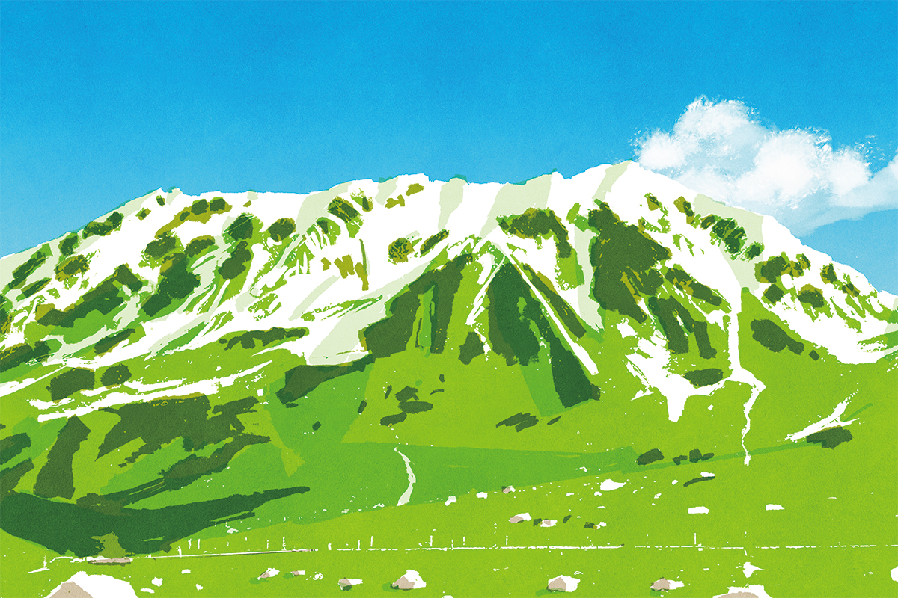
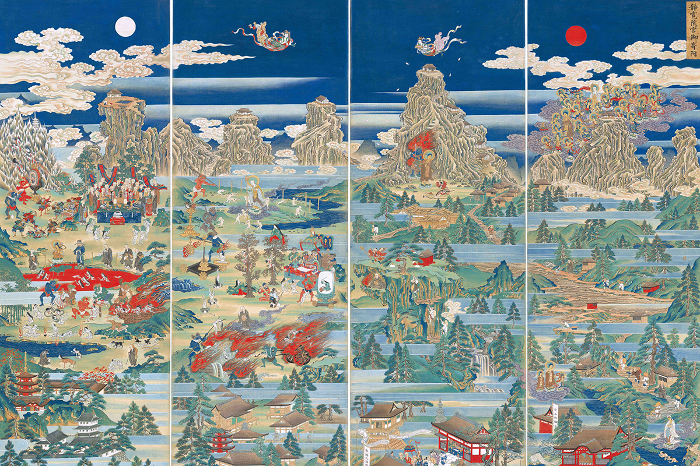
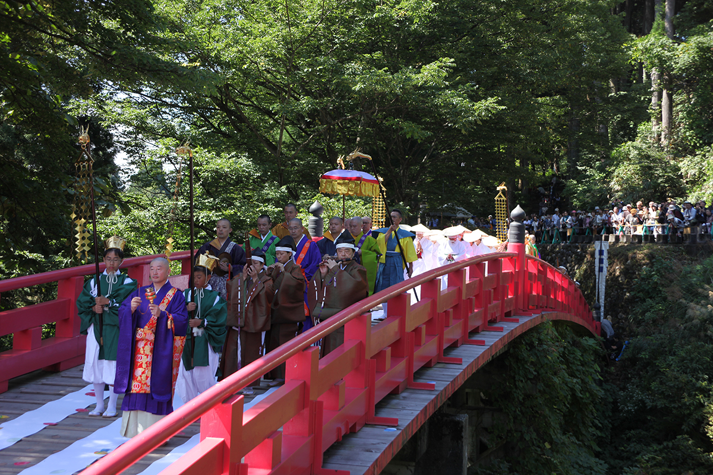
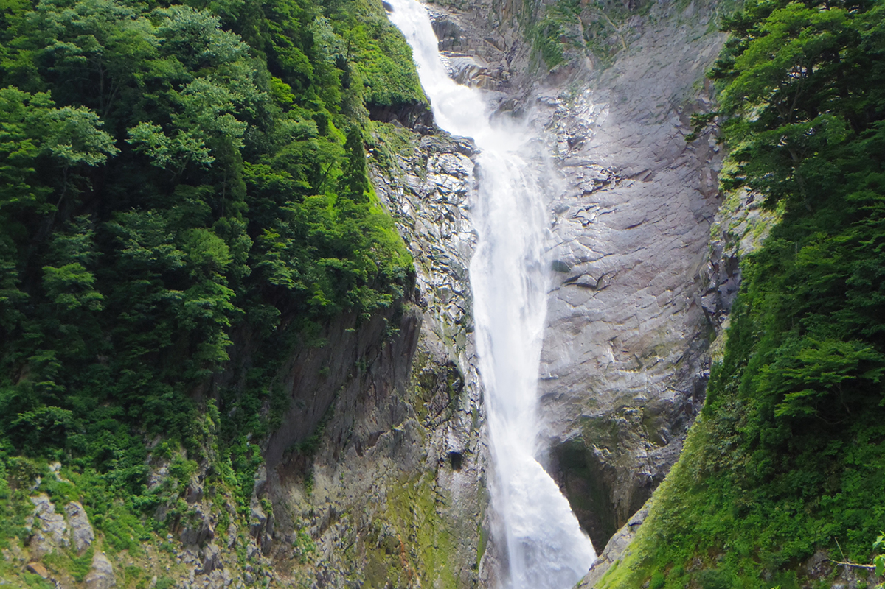
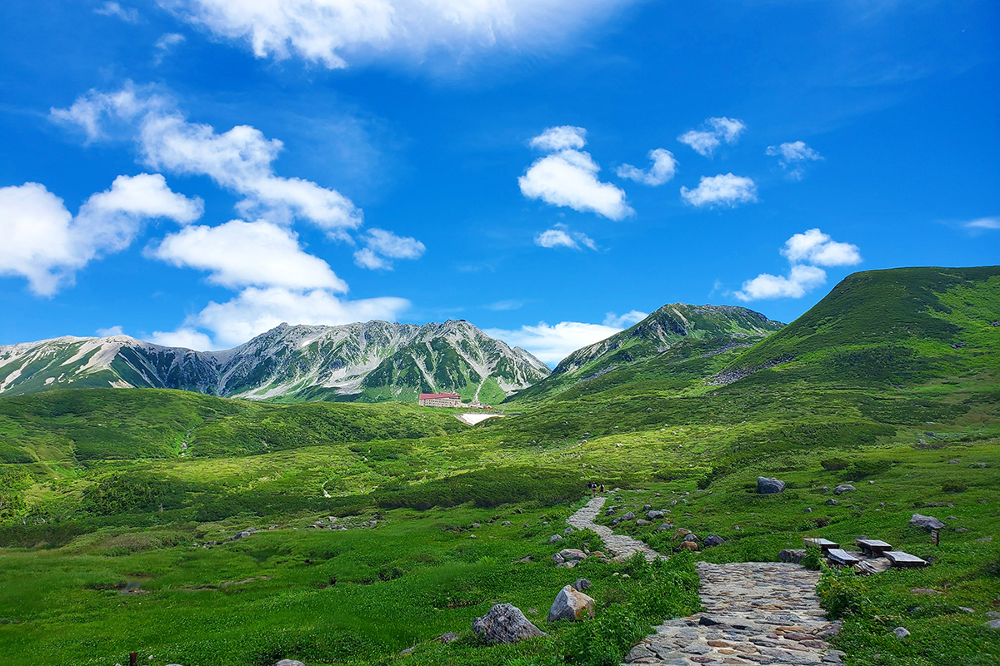
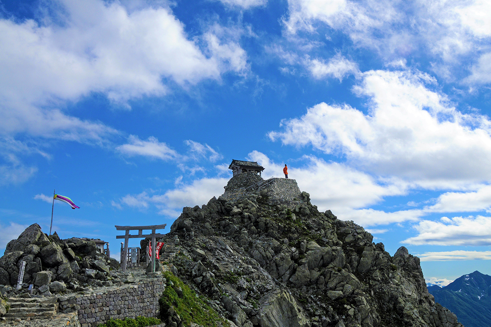

Префектура Тояма · Татэяма · история и паломничество
Татэяма: священная гора, где искали ад и рай и куда веками шли паломники

Фудзи, Татэяма и Хакусан с древности почитают как три священные горы Японии, и паломничество к ним можно считать самым первым приключенческим туризмом. Татэяма в префектуре Тояма славилась особенно: здесь, как верили, в горах лежит ад, а сама гора спасает женщин.
Гора
Вершина, перед которой трепетали
В «Манъёсю», древнейшей антологии японской поэзии, Татэяма воспета в оде поэта Якамоти Отомо (718–785): гора покрыта снегом даже летом и внушает священный трепет. Первоначально её название читали «Татияма»: «тати» значит и «стоять стеной», и «явление богов».
С побережья в Хими или на полуострове Ното хребет Татэяма тянется по горизонту, как огромная складная ширма. Высота горы 3015 метров. Это не одиночный пик, а цепь вершин с севера на юг, и Татэямой называют вместе три из них: Ояму, Онандзи и Бэссан. К северу напротив поднимается крутой пик Цуругидакэ, о котором говорили: «человеку нельзя туда подниматься».
В 1907 году на вершине Цуругидакэ военные топографы нашли навершие посоха горного отшельника и меч, которые относят к началу эпохи Хэйан, то есть к IX веку. Сила духа монахов-аскетов поразила всех.

С эпохи Хэйан до столицы доходили рассказы о том, что в горах Татэямы находится ад. Люди надеялись искупить грехи Лотосовой сутрой и молились бодхисаттве Каннон.
Легенда
Охотник, медведь и раненый Будда
Ариёри Саэки, владетель замка в провинции Эттю, отправился на охоту, и ястреб завёл его в горы, где он погнался за медведем. У грота Тамадоно-но ивая под самой вершиной он увидел будду Амиду, раненного его стрелой. Ариёри понял, что зверь был воплощением будды, отказался от убийства, принял постриг под именем Дзико, построил храм и стал почитать богов и будд горы. По преданию, это случилось в 701 году. Курган, где Дзико ушёл в последнюю медитацию, сохранился в Асикурадзи, деревне у подножия горы.
В конце эпохи Муромати, в XVI веке, горные отшельники совершали обход вершин, представляя гору Дайнити священной горой Кимпусэн, но в эпоху Эдо эта традиция угасла. Паломники шли через деревни Ивакурадзи и Асикурадзи наверх и обратно. В соседнюю провинцию Синано (нынешняя префектура Нагано) дороги не было: княжество Кага, владевшее этими землями, запрещало переходить границу.
Деревни
Проводники между богами и людьми
Асикурадзи состояла из общины монахов школы Тэндай, не подчинённой никакому главному храму. Монахи держали подворья для паломников и водили их в горы как проводники «тюго». Тюго показывал святые места и рассказывал предания, стоял между богами и людьми и был немного медиумом.
Горами ведали монахи Ивакурадзи, другой деревни у подножия. На праздник Обон они бросали в ад «Кровавого пруда» свитки «Сутры о кровавом пруде» и молились о том, чтобы женщины переродились в раю.
Прихожане Ивакурадзи жили только в окрестных землях. У Асикурадзи приходы были далеко: в нынешних префектурах Айти и Гифу. Монахи раздавали там обереги, служили молебны, толковали мандалы Татэямы и звали людей летом подняться на гору. Особенно много записей сохранилось на полуострове Тита: оттуда совершали тяжёлое «тройное восхождение», за два месяца обходя Татэяму, Хакусан и Фудзи. Этот обычай сложился уже в начале эпохи Эдо, в XVII веке.
Обряд
Белый мост для женщин

Женщинам на Татэяму подниматься запрещалось. Зато в Асикурадзи каждый год в день осеннего равноденствия проводили обряд «Нунобаси-кандзёэ». На мост Нунобаси стелили белую ткань, и женщины с завязанными глазами переходили по нему через запретную границу на другой берег, в храм Убадо. Там им вручали обереги и свиток с духовной родословной, а потом они смотрели на закат за хребтом Татэямы, видели в нём рай и обретали уверенность, что спасутся.
Спасительницей женщин считалась горная богиня Убасон. В храме стояли изваяния Убасон от всех 66 провинций Японии и ещё три. Каждый март женщины Асикурадзи меняют на статуях Убасон одежды.
Мандалы
Ад и рай в картинках
В XVIII веке мандал Татэямы нарисовали очень много, и по всей стране их толковали перед публикой, приглашая в паломничество. На них изображали легенду об основании горы, ад и рай, будду Амиду, который нисходит с двадцатью пятью бодхисаттвами. На мандалах из Асикурадзи появился и обряд белого моста.
В конце эпохи Эдо Татэяме глубоко поклонялись женщины Оку, внутренних покоев замка Эдо, и мандалы Татэямы две недели выставляли прямо в замке. Сохранилась мандала 1866 года: по преданию, её пожертвовала принцесса Кадзуномия (1846–1877) в память о рано умершем муже, сёгуне Иэмоти Токугаве (1846–1866).
Святилище
Святилище Ояма в трёх местах
Божеством горы Татэяма считался Татэяма-гонгэн, а его первоначальным обликом был будда Амида. Пика Цуругидакэ хранил Тати-о-гонгэн, первоначальным обликом которого был Фудо-мёо. После 1868 года, в эпоху Мэйдзи, буддизм и синтоизм разделили, и божествами горы стали Идзанаги и Тадзикарао. Святилище в Ивакурадзи стало Маэдатэ-сядан, святилище в Асикурадзи Тюгу-кигандэн, а на вершине Минэ-хонся. Вместе три места составили святилище Ояма.
От буддизма в нём не осталось и следа, зато Татэяма стала святыней альпинизма: сюда идут альпинисты, студенты и просто отдыхающие. В 1971 году открылась дорога Татэяма-Куробэ (Alpine Route).
Маршрут
Водопад, хижина и вершина
Водопад Сёмё назван по молитве будде Амиде: в его шуме слышится «Наму Амида буцу».

Дальше идёт плато Муродо, где с эпохи Эдо паломники ночевали и молились.

На вершине Оямы, главного пика высотой 3003 метра, стоит Минэ-хонся, где в эпоху Эдо поклонялись Татэяма-гонгэну.

Фото: Ассоциация туризма Татэяма-мати, Tateyama Kurobe Alpine Route, иллюстрация: Кэнто Иида.